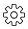

ユーザー、サイトコレクション、またはOffice 365グループの削除
貢献者
ユーザー、サイトコレクション、またはOffice 365グループに関連付けられているすべてのデータを完全に削除できます。パージされたデータは7日間回復可能です。 7日後、データは完全に削除され、ユーザーライセンスは自動的に解放されます。
手順
設定アイコンをクリックします左上隅のSaaS BackupユーザーIDの横。
[ アカウント設定]を選択します。
[保持してパージ]をクリックします。
[ データの消去 ]で、ドロップダウンメニューからサービスの種類 （Exchange、OneDrive、またはSharePoint）を選択します。
削除するユーザー、サイトコレクション、またはOffice 365グループを検索します。
Microsoft Exchange OnlineまたはOneDrive for Businessの場合は、ユーザーまたはOffice 365グループ名を入力します。 SharePoint Onlineの場合は、サイトコレクション名を入力します。
注 ：ユーザーがアーカイブメールボックスを持っている場合、アーカイブメールボックスのユーザー名の前に「インプレースアーカイブ」が付けられます。検索結果が返されたら、
 ユーザー、サイトコレクション、またはOffice 365グループを選択します。
ユーザー、サイトコレクション、またはOffice 365グループを選択します。 保存をクリックします 。
[ はい]をクリックして、データを削除することを確認します。
 GitHubで編集
GitHubで編集